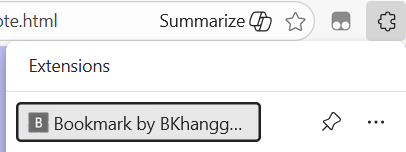
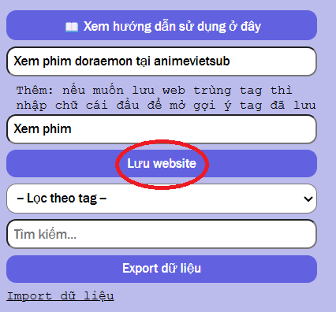
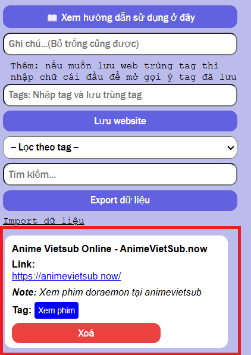
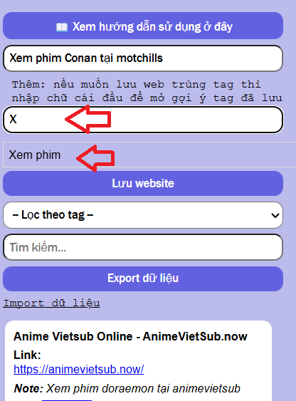
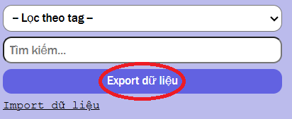
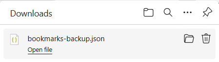
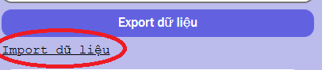
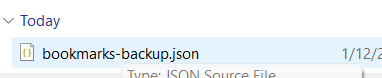

📌 Chú thích

1. Extension này bạn có thể lưu địa chỉ website ngay tại trang web bạn sử
dụng
Bước 1: Bạn vào website bạn muốn lưu, sau đó ấn vào extension (Bookmark by
BKhanggDesu)

Bước 2: Nhập vào ghi chú (Cần nhập nếu tên website khó phân biệt) và nhập
vào tag sau đó bấm lưu website

Sau đó ta sẽ thấy phần list được lưu ở dưới

Lưu ý: Ta có thể ấn vào "Link" để mở web
2. Chức năng gợi ý tag khi nhập chữ cái đầu liên quan

Sau đó ta ấn vào lưu website
3. Chức năng import và export
3.1. Chức năng Export

Ấn vào Export để xuất file lưu trữ json

Sau đó ta sẽ có file bookmarks-backup.json được lưu tại Downloads ở PC
3.2. Chức năng Import

Ấn vào import dữ liệu

Chọn file và sau đó import vào để có dữ liệu đã lưu lại